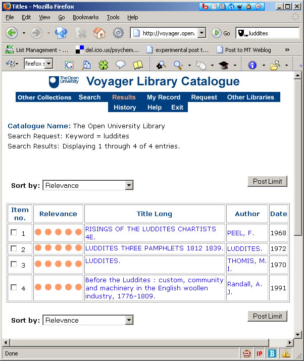
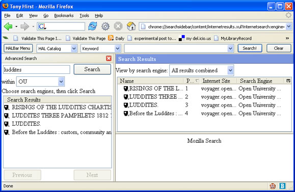

June 24, 2005
Voyager XML Feed
This is a quick follow up to the OUseful Info: Greasemonkey XML Feed for ROUTES to post a 30 second reverion of the ROUTES/XML feed script that adds an XML feed of the results from a keyword search on the Voyager catalogue:

Here's the link to the Voyager keyword search results XML feed Greasemonkeey script.
As ever, this is not necessarily a stable service, in part because the screenscraper that generates the XML is still alpha-quality code (and will never be anything different!)
June 21, 2005
OAI Access to OU ePrint Repository
Lest I forget before I get a chance to play with it, the OU repository, which is implemented using an eprints server, has this exposed OAI interface.
I'm not sure what it's good for yet (!), but I'm sure that a quick peek at the Open Archive Initiative (OAI) site will provide a few clues, as will as play with this OAI Repository Explorer.
While I'm at it, here are a few more links in the ballpark: an overview of OAI, a possibly useful XSL styylesheet, a useful(?) article, a look at OAI and SRW/U...
June 20, 2005
Are Desktop-Based Browsers the Best Way Forward for e-Learning?
I'm still not sure that I have a clear understanding of what we all mean by e-learning, but I'm increasingly unhappy with the common assumption it has something that it is just to do with stuff delivered through a networked desktop, or laptop, computer screen...
An interesting news story today (Reaching out to digital refuseniks) highlights a related issue - the penetration of PC-based, broadband connected computers into our daily lives:
"[The digital divide] seems an odd term given the preponderance of digital products in our lives. What would be more helpful, and what most people mean by digital divide, is access to the internet via a PC," [Ian Fogg, an analyst with Jupiter Research] said.
And in a third example, a similar assumption (of access to networked PCs) appears to provide the cornerstone of trendy reports on Digital Inclusion; (I tried to find a definition of digital inclusion, but failed, even in the all-describing Wikipedia...).
In the OU, we increasingly require students to have access to a networked PC (and I do mean Windows-based PC, of course, since we all know that PC = Windows, Mac = Mac, Linux machine = Linux machine, etc. etc.). The platform issue is already a matter of concern for some current students (e.g. Open OU), but I wonder whether this will be even more of an issue in the years to come?
Thinking about the trends going on in my own family, for example, the rest of the bunch use SMS text messaging heavily, and email very rarely. I can quite see an iPod or its equivalent becoming the thing we plug in to an amplifier/speaker system in our car and 'home entertainment system', rather than a scratched CD, or battered cassette tape (the car still only has a tape player - which means an uncomfortable lash up for a portable CD player if we want an alternative to the radio or anthing other than a 5 year old + audio tape). Our (newish) DVD-writer/hardrive combo is now littered with episodes of Dr Who and countless unwatched (to-view list) films, all of which need dumping to DVD if we're to record anything new on the hard drive!
And I can see that the next iteration of our domestic entertainment setup will give us digital TV and digital radio (possibly - we're terrestrial digital broadcast deprived where we live at the moment - and I really don't want to have to by a Sky dish...)
If there were time for games playing, I think a games console (lean-back on the settee), rather than PC (lean forward over a keyboard), would be what we opt for.
And if it comes to those other mainstays of communication - books or the phone - then I'd rather choose where I read them, or sit, or pace as I talk, rather than have to boot the PC, glance at the screen 3 feet away from me, and stare at the keyboard as I try to type...
It also has to be said that during the course of a normal day I see more people on a daily basis txting (or talking) on their phone, reading a pocket-sized book, listening to their car stereo (radio, or CD), or iPod, and jotting into a notebook, than I see using a laptop or PC...
I think in our increasingly sedentary home lifestyle, the PC will be used less and less as we find more convenient (relaxing? passive??) ways to consume content. And I wonder how this relates to distance education, particularly where it is consumed in the home, or in transit between home and work.
Time and again I keep coming back in my own mind to a comment that I heard made about m-learning via mobile phones. The speaker had given a demonstration of some ropey WAP screens, and not too effective SMS based interactions (this is 3 years ago now) and had asked for comments from the floor about other possible uses for the handset. "You could use it as a phone" someone said, "or to receive an audio lecture". The speaker was stunned at the novelty of the idea, even going so far as to write it down as worthy of further thought...
And so to the purpose of this post, which I could have made a one-liner really, but wanted to try and build up to...
Here's the hint condition as to what it is: the pictures are better on radio than on TV...
And here's the (almost one liner): if e-learning = CAL + conferencing is such a bad assumption, what's a better one? I don't know...
But what I do know is, we're not making enough use of audio: think podcast... (don't you just hate that word?!)
Here's a couple of related links that add to the mix...
- BT launch mobile radio
- Apple and Nokia: Who Approached Who?
June 16, 2005
OU on a USB Drive?
Quite by chance, I just got to see a copy of a (presumably monthly?) newsletter from LTS Interactive Media, and there's some interesting stuff in there, such as this news item:
U3 is about to launch technology that turns a USB flash drive into a USB smart drive. They say this lets you carry programs and personal preferences, launch software, and access all of your own data on any Windows XP or Windows 2000 PC without the need for local software installation.
The potential for the OU could be an end to many of the installation/configuration problems our students experience, plus the capability to mail out the main program and heavy media assets, but to then supplement or amend these via online links as the course progresses.
At last..! Some of us have been saying (though not doing, admittedly) that we should be looking at ways of letting students take their OU context with them wherever they go, and (fingers crossed) someone will be keeping more than a weather out on this sort of technology.
I think at one point it was mooted that the Technology Short Course/Relevant Knowledge Programme courses should be made available on a USB drive (after all, they're largely just HTML pages, with the odd bit of Flash and Javascript, and a few movies) but for some reason (there was a reason, I'm sure....) this never happened.
Anyway - as we wait for the arrivial of USB Smart Drives, here's one way of allowing students to carry a browser context around with them on a USB drive: Portable Firefox 1.0.4 (USB Drive-Friendly).
For a long time, I've thought we should be providing students with a branded, extended and personalised OU browser. (For starters, it would be easy enough to preinstall an OU library toolbar (which I really need to upgrade with the MyLibrary Record bookmarklet)). This version of Firefox looks like an ideal platform for prototyping some of my thinking in this area.
Another point of note - John Haller, who's made the USB-able Firefox download available, has also made some other open source packages USB friendly too, such as the USB-friendly Open Office suite.
June 13, 2005
Sitemapping My Blog...
Just a quick note as I grab a coffee on a sitemap extension I've made to the index profile of this blog...
In response to the announcement of Google Sitemaps (which I've also written about in a Micro-Info post on Towards the Skeletal Web) I made the mods suggested in Niall Kennedy's Weblog: Google Sitemaps using Movable Type to produce an XML sitemap of this blog.
June 08, 2005
Greasemonkey XML Feed for ROUTES
Quite some time ago, I produced a screenscraper for the OU Library ROUTES service that produced an RSS feed of the search results.
Some time later, the Library trialled an XML output feed (e.g. this example for the course T396) but as far as I know it was never publicised on the ROUTES pages. It also just seems to be tied to outputs from course searches. (I guess the API could be rather more complete, but trying a search using a keyword attribute didn't work, for example.)
My ROUTES-RSS generator can be called straightforwardly via an HTTP GET, as this example shows:
http://ouseful.open.ac.uk/ROUTEScraperRSS.php?ccode=artificial%20intelligence
As mentioned, this tool has been languishing largely unused for sometime, so today I thought I'd spend half an hour instaed of lunch plugging it into the ROUTES search results page with a Greasemonkey script.
Once installed, the script adds an obvious XML-RSS feed to the page. See if you can spot it:

If you want to give the script a go, make sure you have Greasemonkey installed (we're talking Firefox, here, naturally ;-), pop over to the OU-ROUTES XML linky script, and select Install User Script... from the browser Tools menu.
If you now do a search on the ROUTES catalogue, you should get the RSS results feed too. (If it's a frequent search, why not make the link a Live Bookmark?
What surprised me (not really) was how easy this was to do once I got my head round the Greasemonkey script. And it was quick too - half an hour or so playtime instead of lunch...
With tools like Greasmonkey available, personal remixing of pages (and Web Page+) is only just beginning...
June 07, 2005
Relevant News and Social ROUTES?
To what extent should our longlasting courses be augmented with contemporary, perhaps short-lived, content and/or external references?
Some time ago I made a short post about bookmark management in the context of links provided from within course materials, as well as those recommended via ROUTES.
In my experience, the ROUTES resources tend to be largely static - in the case of T396, the original links were selected several years ago. Including longliving, archive quality links is an important feature of ROUTES, but as a consequence there is little opportunity to refer students to timely, or currently newsworthy, sites.
If we take the view that are courses are constructed so as to be wholly self-contained, as well as being rigorously structured, then we are likely to be wary of encouraging students to bolster our course materials with information from sources we haven't selected. This goes against the model of learning we base the OU teaching approach on, however. To simplify somewhat, students are not seen as empty vessels into which we can pour educational content; rather, we assume that our materials support students as they construct their own understanding of the principles we aim to teach them.
An important step on the road to effective learning is the ability to evaluate relevant sources of information related to the topic being studied, along with being able to assimiliate information into a wider understanding of the topic at hand. If our students completed our courses without the ability to go on learning about that particular subject area, we would be failing them.
To support students in their individual learning journeys it may be that we should be providing them with resources that contain fluid information in addition to the fixed knowledge resources that are embedded into a course during its production )and that are intended to remain in the same form for the lifetime of the course).
I would briefly like to consider two possibilites:
1) The provision of news headlines relevant to a course embedded in the course web pages;
2) The provision of a social, course specific bookmarking facility akin to ROUTES.
Relevant News
Adding relevant news to course webpages can be achieved by publishing content taken from an RSS feed from a reputable source. The BBC Backstage initiative is currently allowing users to republish BBC material in their own webpages, which suggests that we might make (re)use of BBC material to provide a Relevant News Headlines link table in our course pages. At the moment, the BBC do not provide RSS (i.e. directly reusable) feeds from their search engines, but this will either be made available in a matter of time, or someone will start archiving news stories and producing their own search feeds (for example, you can search the Today archive here ).
Social ROUTES
The idea behind Social ROUTES is to allow students to bookmark sites of interest using an in-house variant of the del.icio.us social bookmarking tool. Students would be provided with their own customised bookmarklets that would allow them to easily bookmark a page and automatically tag it with the course code, along with any other meaningful tags the student desired.
Displaying bookmarklets from all users on a particular course will facilitate knowledge sharing across the course cohort.
Additional administrative tags recording the presentation code might also be added automatically by the bookmarklet tool, thus allowing students (or the course team) to filter results by presentation.
Capturing knowledge about sites relevant to a course that are frequented by siginificant numbers of students on a particular course may provide course teams with information about areas where the course materials are lacking (for example, if large numbers of students are bookmarking online tutorials on particular topics). In addition, the bookmarks may also identify candidate sites for inclusion in the less fluid ROUTES database.
Finally, the evolution of folksonomies around sites tagged for a particular course may identify conceptual or thematic issues identified from the students point of view, thus helping course teams to come to a better understanding of what messgaes and ideas the students are themselves taking away from a particular course.
I hope to be posting more on Social ROUTES in the next couple of weeks, possibly with a demo or two...
June 06, 2005
Firefox Advanced Search Screencast
A couple of week ago, I posted my first couple of attempts (since updated on the same URL) at building OU Firefox Search Plugins, described in their simplest form in this Firefox hack excerpt. These plugins provide additional search engines within the Firefox Search toolbar (in the post described above, plugins for the OU Search Engine, the OU Voyager Library Catalogue, and the OU IET (public) knowledge network).
Since then, I've stumbled across the Firefox Advanced Search Sidebar. To briefly summarise, the Advanced Search sidebar allows you to select one or more search engines, or create profiles containing one or more search engines, and perform a metasearch over them.
This apparently recreates some of the functionality of Mozilla search and explains the <INTERPRET> tag in the search extension definition.
What the extension does is to scrape the results from each search engine results page and redisplay them in the sidebar, as well as in an aggregated results page. You also have the option of displaying the results from each search engine directly and independently of the results from the other selected search engines.
The screenscraping is keyed by identifying the region of the search page within which the results can be found, as well as notable code fragments surrounding each search result item. The scraped results correspond to the first (?) link found in the item, and are described by the link text.
For example, this keyword search on the OU library catalogue for luddites returns a handful of search results:

The titles and links of each of these responses are scraped and republished in the sidebar.

There are a couple of problems though. Firstly, the library catalogue results are tied to a session ID, rather than a persistent URL, and as such may time out (although this could be managed by rewriting the URL in the sidebar script). Secondly, where an image tag forms part of the search result link text, as it does for instance in the results from the OU search engine, the result cannot be displayed (at the time of writing, only textual links are valid).
The search engines that you can search over are the same search engines that are 'installed' within the search toolbar. As soon as you install new search engines into the toolbar (as for example the OU search engine plugins mentioned above, or any of the other plugins described on the Mycroft search plugin page) it becomes available in the Advanced Search Sidebar.
If you still aren't sure what it is the extension does, and aren't convinced enough to try it out for yourself, I have produced a short screencast featuring an OU metasearch to show the extension in action...
June 03, 2005
MyLibraryRecord
One of the obvious improvements to v0.1 of my OU Library Toolbar is to tweak the My Library Record bookmark so that instead of opening the 'login' page, it logs you in automatically.
As I don't have time just at the moment to hack around with the toolbar, I thought I'd prototype this functionality with a Firefox bookmarklet. There are a couple of issues though.
Firstly, the bookmarklet needs to reveal my surname and library card number. I'm not sure how 'secret' this info is, but assuming I'm not supposed to reveal it (a password widget is used to enter it, after all) means that I can't publish a full working demo of the bookmarklet here...unless the library has a dummy user account I can borrow...;-)
Secondly, the form used to gain access to My Library Record uses an HTTP POST, rather than a GET. GET would be easy - POST is trickier... However, I tracked down a workaround for this before, so reusing that approach gives us:
- a MyLibraryRecord bookmarklet.
This bookmarklet is probably too long for IE, but it works okay in Firefox. To use it:
1) drag it onto your Firefox bookmarks toolbar;
2) right click on it and go into Properties;
3) In the Location field, look along the javascript code and insert your Surname and OU Library Card number in the appropriate places (e.g. libID='0310073861';surname='Other');
4) Click on Okay.
When you click on this bookmarklet, you should be taken straight to your Library Record page.